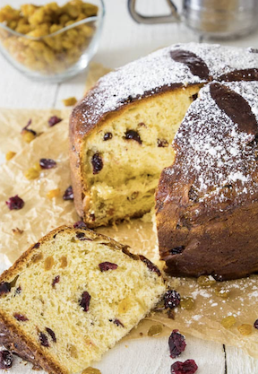

Panettone Recipe

Description
Panettone is an Italian Christmas bread that's loaded with candied fruit.
This homemade recipe bakes the dough in festive paper panettone molds for a gorgeous Christmas gift.
Ingredients
- 1/3 cup warm water (110 degrees F)
- 2 (.25 ounce) packages of active dry yeast
- 4 cups all purpose flour
- 1/2 cup warm milk
- 2/3 cup white sugar
- 4 large eggs
- 2 large egg yolks
- 1 teaspoon vanilla extract
- 12 tablespoons unsalted butter
- 2 cups candied mixed fruit
- 2 1/2 teaspoons grated lemon zest
- 2 tablespoons orange zest
- 2 tablespoons butter, melted
- 1 egg yolk
- 1 tablespoon cream
- 3 (7 x 4-inch) round paper panettone molds
Steps
- To make sponge, warm a small bowl by rinsing it with hot water. Pour in warm water and sprinkle 1 package yeast on it. Let stand until yeast has dissolved. Stir in 1/2 cup flour, cover with plastic wrap, and let stand 30 minutes, or until doubled. Sprinkle remaining yeast over warm milk. Let stand until dissolved. Beat together sugar, eggs, egg yolks, and vanilla. Stir in milk-yeast mixture. Add sponge and stir until well incorporated.
- Combine butter and remaining 3 ½ cups flour until crumbly. Slowly pour in egg mixture and beat on high speed 3 to 4 minutes, until dough is elastic looking and long strands form. Beat in fruit and zests. Turn dough into oiled bowl, cover with plastic wrap, and leave in a warm place to rise until doubled, about 2 to 3 hours.
- Brush inside of three 7 x 4-inch paper molds with melted butter. Turn dough out onto a lightly floured work surface and knead a few times to deflate. Divide dough into 3 pieces. Roll each piece into a ball and drop into prepared molds; place on a baking sheet about 4-inches apart and cover loosely with plastic wrap. Let rise in a warm place until doubled again, about 2 hours.
- Preheat the oven to 400 degrees F (200 degrees C). Cut an X in top of each loaf with oiled scissors. Combine egg yolk with cream. Brush tops of loaves lightly with egg wash.
- Place baking sheet with loaves in bottom 1/3 of preheated oven. After 10 minutes, lower heat to 375 degrees F (190 degrees C). Continue to bake for 30 more minutes; if tops get too brown, cover with foil. Loaves are done when a wooden skewer inserted into centers comes out clean. Cool on wire rack.